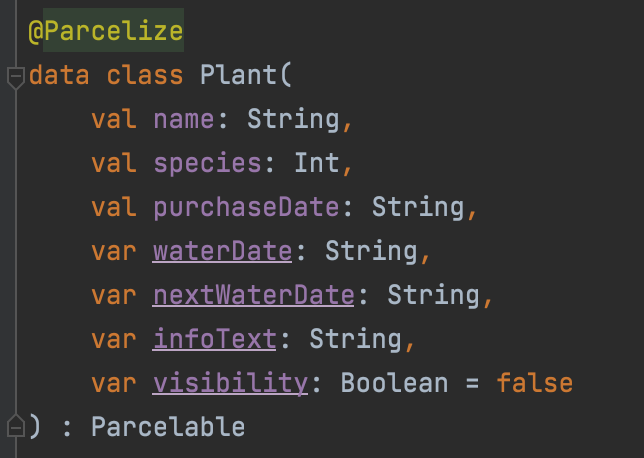

This design work was part of a university project and involved the creation of an app concept as well as the development of the CRUD app in Android Studio with Kotlin and SQLite.
The general app idea was to implement a digital plant encyclopedia/ diary.
The user can create entries in
the app for each of their houseplants. The entry includes information like the plant’s name, the plant
species, date of purchase, date of
last irrigation. The entries are stored in a database using SQLite. Furthermore, the app calculates and
displays the next date of next irrigation per
plant, so that the user knows
when to
next water the plants. Some first wireframe designs for the app were created in Figma.
A central part of the app consists of the data class 'plant' which represents the entries the user creates, updates, reads and deletes. The name, species, purchaseDate, waterDate are set when user creates a new entry. The nextWaterDate is calculated dynamically based on the waterDate (last time user watered their plant) & species (value for the optimal number of days between watering the plants stored in external CSV file). The infoText is based on the plant species and is dynamically fetched from external CSV file.
A basic diagram was created to visualise the structure of the app and
the
connections between the
different classes.
The Main Activity controlls the NavigationView with the hamburger menu on
the
side. Based on the
chosen
item in the menu the corresponding Fragment is displayed.
The data containing the optimal number of days between watering the plants
and the infoText for each
plant species is stored in an external CSV file. This is, as it is more dynamic (file can be adjusted
without having to change code) and gives the future opportunity to fetch data from the internet. The CSV
file is read and the info is stored in a database.
The plant entries are stored in a database using SQLite. The two
databases are controlled from the
DatabaseHelper class. The DatabaseHelper object is fetched and displayed in the HomeFragment as well as
in the ToDoFragment. The entries can be updated and deleted in the HomeFragment.
As plant entries are displayed in a RecyclerView and a swipe-to-delete
interaction should be
implemented in the HomeFragment, the entries needed to be able to be deleted by position in the
RecyclerView. As there is one id missing now, the entries are not ascending seamlessly. Therefore, the
entries are transferred into another new table and given new unique ascending ids. The old table is
deleted.
When creatung an entry the AddFragment is called and the user is shown a form. The user inputs are checked. A new entry is created and the new entry is added to the database.
The user can irrigate the plants in the ToDoFragment which can be accessed via the NavigationView. The user can press the waterdrop button which updates the lastWaterDate in the system and calculates the nextWaterDate. The RecyclerView is updated.
As this work was part of a university project and the first time I was working with Android Studio and Kotlin, there is room for code refinement. Nevertheless, I am content with the result and the progress I made working with Kotlin and SQLite. From the perspective of UX, some user testings would need to be conducted to evaluate the intuitive use of the app.
Further refinements could include:
An extended report can be downloaded here.